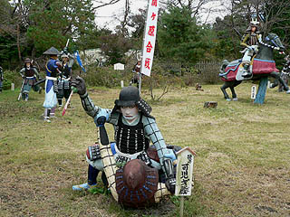

桃太郎神社、五色園と並んで浅野祥雲師の作品が鑑賞出来る三大スポットである関ヶ原ウォーランド。
浅野ファンにしてみればこの三ヶ所はいわば三大聖地であり、高野山や伊勢神宮に参るが如く、イスラム教徒がメッカに巡礼するが如く、キリスト教徒がエルサレムに行くが如き必見の地なのである。
まだ訪れていない方はこの地において是非その希代のコンクリ作家の作風を目に焼き付けていただきたい。
コンクリ像にペンキが塗ってあれば浅野作品だ！とか安易に決め付けちゃダメですよ。
浅野師の作品の多くが仏像であると思われるが、ここに置かれているのは勿論戦国武将である。
約一万坪の敷地に実物大の戦国武将のコンクリ像二百数十体が関ヶ原の戦いを再現する、というおよそ人類が遭遇したことのない革命的な展示形態のテーマパークだ。
オープンは昭和39年。もちろんテーマパークなどという言葉も概念もない時代の話である。
正直言って現地に行くまで何で潰れないのか、不思議で仕方なかった。で、実際行ってみても何で40年の間潰れてないのか、不思議でならなかった。近くの遊園地とか完全に廃墟になってたのに…コレもひとえに浅野師の作品の完成度の高さによるものであろう、と思う事にした。
考えてみればココ以外で浅野師が戦国武将を作っているのを見た記憶がない。逆にネタを変えても変わらない浅野作品の本質のようなものを感じ取るには良い場所だろう、とも考えられる。
まずは観音サマがお出迎え「祈 ノーモア関ヶ原合戦」という石碑に早くも男泣き。
で、園内に入ると若干の資料館を見学してからいよいよ合戦の舞台に突入である。
そういえば資料の展示とかも結構面白かったように記憶しているのだが何を展示してあったかほとんど思い出せない。何故だ？
最初は馬に乗った武者がお出迎え。
勿論実際に騎乗して戦国武将を気取るもよし。またドMの方は馬の下敷きになって足軽プレイを味わうのも一興かと。
お、山内一豊。妻に買ってもらった名馬ですね。
何故か関が原の合戦とは関係ない龍が池にいる。
一応十九女池の美女と大蛇の由来が書かれているが、それが合戦の真っ只中に登場する必然性があるのかは不明だ。
もしかしたら単に浅野師が龍を作りたくなっちゃっただけかもしれない…
さて、園内を進めば戦いのボルテージはどんどんエスカレートしていく。
一通り騎馬武者が登場した後は白兵戦が展開されている。

まあ、こんな感じの血気盛んな施設なのだが、ほぼ貸切状態で大量の浅野作品を鑑賞出来るのでもってこいの環境だったりもする。ちなみにココに来て親子団欒とか家族再生とか、そーゆーのは一切期待しないでください。
ここは純粋に浅野祥雲作品を鑑賞する場ですから。
関ヶ原合戦時にはとっくに死んでいた武田信玄の亡霊も乱入プレイ。
「我こそは武田信玄の亡霊じゃ！もう争いはやめい！ノーモア関ヶ原じゃ！」
…よっぽどノーモア関ヶ原のフレーズが気に入ったんでしょう。
さて、そんなこんなで戦も佳境に入っている(んだと思う)。
右下の白馬の下にある水色の水煙は今後、意外なところで再会することになるがそれはまだまだ先の話。
勿論鉄砲隊も出陣。
浅野師も普段は仏像や神像を中心にコンクリ像を制作されていたであろうゆえ武士はかなり作りにくかったのではなかろうか。
しかし名の知れた武将の甲冑や家紋などは私の見る限り間違ってないと思うんですけど、如何ですか?
西軍の石田三成の陣地。
小早川秀秋が様子を伺っている。裏切る、裏切るぞ！
その小早川隊の裏切りを予見していた大谷吉継の切腹シーン。
今まさに腹を切らんとするその右手に蔦が這っているのが時の流れを感じさせてくれて、これまた男泣き。
合戦シーンは浅野祥雲師の造型師としてのスキルを全て注入したかのような素晴らしいもの。
師が70代の頃の作品群である。恐らく最後の大仕事といっても良いであろう。
敷地の一番奥には戦観音という仏像が鎮座している。
このベンガラのような赤茶色の像をよ〜く覚えておいていただきたい。
今までペンキ塗りのカラフルなコンクリ像ばっかりだったので地味でマイナーな存在に思えるかもしれないが、実はここから浅野作品を巡る真の旅がはじまるのだ。
五色園、桃太郎神社、そしてこの関ヶ原にある浅野作品のほぼ全てが後年に塗り替えられている。
従って、カラフルにペンキで塗られている、というのは浅野作品の本質ではないのかも知れない。
ので、あえてその表情、目のカタチ、顎のライン、頬のゴルゴライン、鼻の角度等々に注目してご覧いただきたい。
普段はドングリまなこにやや垂れ目な作風が多いが、天下分け目の戦ということで目が吊ってますね。
あいや、待たれよ！の図。
緊張感溢れるシーンなのにこのアンニュイな感じったら。
コレなんかかなりイイ感じだと思うんですけど。
でも浅野作品っぽいか、と聞かれればそうでもないような気もします。
コレはちょっと宮崎アニメ入ってますか?
こうして見ているとコンクリ像で等身大以上のサイズ、という基本的なラインとは別に表情がユーモラスかつ微妙に虚ろなのが浅野祥雲作品の特徴と言えよう。造形力は確かなのに。
戦争、事件、争い、そんな世知辛いシーンや信仰といった真面目なシーン、そんな見る側にとっては大仰かつ真剣に向き合わなければならない場面を浅野師はいとも軽やかに表現していく。
そんな飄々とした世界観が師の作品の真骨頂なんだと思う。
ホラ、生首だって浅野師の手にかかればこんなにユーモラス。
まるで横山光輝センセの三国志のようだ。
敗軍の首が検分されている。
家康の前にあるのは湯浅五助の首。
先ほど切腹していた大谷吉継の側近であり、切腹した吉継の亡骸を埋葬したとも伝えられている。
首検分をする家康の後ろには尻尾がはえてるじゃないっすか！さすが狸爺。
敷地の片隅には子供専用カラクリ屋敷があった。
大人なので中の様子はうかがい知る事は出来ませんでしたが廃墟だったみたい。
こんな感じで次回からは深遠なる浅野祥雲の世界マニアック編に突入する予定です。御覚悟めされよ。
2004.11.
珍寺大道場 HOME